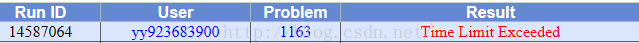
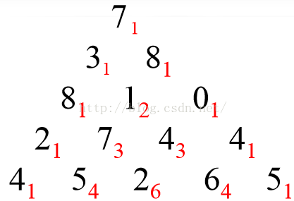

递归RECURSION
目标：
- 了解某些用其他方法难解的问题或许有简单的递归揭发
- 学会如何用递归的方式写程序
- 理解和运用递归的三大法则
- 了解递归是迭代（iteration）的一种形式
- 实现问题的递归描述
- 了解递归在计算机系统中如何实现
递归是一种解决问题的方法，它把一个问题分解为越来越小的子问题，直到问题的规模小到可以被很简单直接解决。通常为了达到分解问题的效果，递归过程中要引入一个调用自身的函数。
计算数字列表的和
迭代法：
def list_sum(num_list):
the_sum = 0
for i in num_list:
the_sum = the_sum + i
return the_sum
print(list_sum([1,3,5,7,9]))
现在，假设我们不能使用while循环或者for循环
加法是一个有两个参数——两个数字——的函数。为了将数字列表的问题重新定义为对两个参数求和的问题，我们可以利用全括号的表达式来重新表示列表，就像下面这种形式：
((((1+3)+5)+7)+9)
递归法：
def list_sum(num_list):
if len(num_list) == 1:
return num_list[0]
else:
return num_list[0] + list_sum(num_list[1:])
print(list_sum([1,3,5,7,9]))
递归中的动态规划
在上面的数字三角形中寻找一条从顶部到底边的路径，使得路径上所经过的数字之和最大。
输入格式：
5 //表示三角形的行数 接下来输入三角形
7
3 8
8 1 0
2 7 4 4
4 5 2 6 5
要求输出最大和
接下来，我们来分析一下解题思路：
首先，肯定得用二维数组来存放数字三角形
然后我们用D( r, j) 来表示第r行第 j 个数字(r,j从1开始算)
我们用MaxSum(r, j)表示从D(r,j)到底边的各条路径中，最佳路径的数字之和。
因此，此题的最终问题就变成了求 MaxSum(1,1)
当我们看到这个题目的时候，首先想到的就是可以用简单的递归来解题：
D(r, j)出发，下一步只能走D(r+1,j)或者D(r+1, j+1)。故对于N行的三角形，我们可以写出如下的递归式：
if ( r == N)
maxSum(r,j) = D(r, j)
else
MaxSum(r,j) = Max{ MaxSum(r + 1, j), MaxSum(r+1, j+1)} + D(r,j)
- #include <iostream>
- #include <algorithm>
- #define MAX 101
- using namespace std;
- int D[MAX][MAX];
- int n;
- int MaxSum(int i, int j){
- if(i==n)
- return D[i][j];
- int x = MaxSum(i+1,j);
- int y = MaxSum(i+1,j+1);
- return max(x,y)+D[i][j];
- }
- int main(){
- int i,j;
- cin >> n;
- for(i=1;i<=n;i++)
- for(j=1;j<=i;j++)
- cin >> D[i][j];
- cout << MaxSum(1,1) << endl;
- }
对于如上这段递归的代码，当我提交到POJ时，会显示如下结果： 
对的，代码运行超时了，为什么会超时呢？
因为我们重复计算了，当我们在进行递归时，计算机帮我们计算的过程如下图：

就拿第三行数字1来说，当我们计算从第2行的数字3开始的MaxSum时会计算出从1开始的MaxSum，当我们计算从第二行的数字8开始的MaxSum的时候又会计算一次从1开始的MaxSum，也就是说有重复计算。这样就浪费了大量的时间。也就是说如果采用递规的方法，深度遍历每条路径，存在大量重复计算。则时间复杂度为 2的n次方,对于 n = 100 行，肯定超时。
解：
每算出一个MaxSum(r,j)就保存起来，下次用到其值的时候直接取用，则可免去重复计算。那么可以用n方的时间复杂度完成计算。因为三角形的数字总数是 n(n+1)/2
据这个思路，我们就可以将上面的代码进行改进，使之成为记忆递归型的动态规划程序：
- #include <iostream>
- #include <algorithm>
- using namespace std;
- #define MAX 101
- int D[MAX][MAX];
- int n;
- int maxSum[MAX][MAX];
- int MaxSum(int i, int j){
- if( maxSum[i][j] != -1 )
- return maxSum[i][j];
- if(i==n)
- maxSum[i][j] = D[i][j];
- else{
- int x = MaxSum(i+1,j);
- int y = MaxSum(i+1,j+1);
- maxSum[i][j] = max(x,y)+ D[i][j];
- }
- return maxSum[i][j];
- }
- int main(){
- int i,j;
- cin >> n;
- for(i=1;i<=n;i++)
- for(j=1;j<=i;j++) {
- cin >> D[i][j];
- maxSum[i][j] = -1;
- }
- cout << MaxSum(1,1) << endl;
- }
递归总是需要使用大量堆栈上的空间，很容易造成栈溢出，我们现在就要考虑如何把递归转换为递推，让我们一步一步来完成这个过程。
我们首先需要计算的是最后一行，因此可以把最后一行直接写出，如下图：

现在开始分析倒数第二行的每一个数，现分析数字2，2可以和最后一行4相加，也可以和最后一行的5相加，但是很显然和5相加要更大一点，结果为7，我们此时就可以将7保存起来，然后分析数字7，7可以和最后一行的5相加，也可以和最后一行的2相加，很显然和5相加更大，结果为12，因此我们将12保存起来。以此类推。。我们可以得到下面这张图：

同样的道理分析倒数第三行和倒数第四行，最后分析第一行，我们可以依次得到如下结果：

写出如下的递推型动态规划程序：
- #include <iostream>
- #include <algorithm>
- using namespace std;
- #define MAX 101
- int D[MAX][MAX];
- int n;
- int maxSum[MAX][MAX];
- int main(){
- int i,j;
- cin >> n;
- for(i=1;i<=n;i++)
- for(j=1;j<=i;j++)
- cin >> D[i][j];
- for( int i = 1;i <= n; ++ i )
- maxSum[n][i] = D[n][i];
- for( int i = n-1; i>= 1; --i )
- for( int j = 1; j <= i; ++j )
- maxSum[i][j] = max(maxSum[i+1][j],maxSum[i+1][j+1]) + D[i][j];
- cout << maxSum[1][1] << endl;
- }
其实完全没必要用二维maxSum数组存储每一个MaxSum(r,j),只要从底层一行行向上递推，那么只要一维数组maxSum[100]即可,即只要存储一行的MaxSum值就可以
过程：


接下里的步骤就按上图的过程一步一步推导就可以了。进一步考虑，我们甚至可以连maxSum数组都可以不要，直接用D的第n行直接替代maxSum即可。但是这里需要强调的是：虽然节省空间，但是时间复杂度还是不变的。
- #include <iostream>
- #include <algorithm>
- using namespace std;
- #define MAX 101
- int D[MAX][MAX];
- int n;
- int * maxSum;
- int main(){
- int i,j;
- cin >> n;
- for(i=1;i<=n;i++)
- for(j=1;j<=i;j++)
- cin >> D[i][j];
- maxSum = D[n]; //maxSum指向第n行
- for( int i = n-1; i>= 1; --i )
- for( int j = 1; j <= i; ++j )
- maxSum[j] = max(maxSum[j],maxSum[j+1]) + D[i][j];
- cout << maxSum[1] << endl;
- }